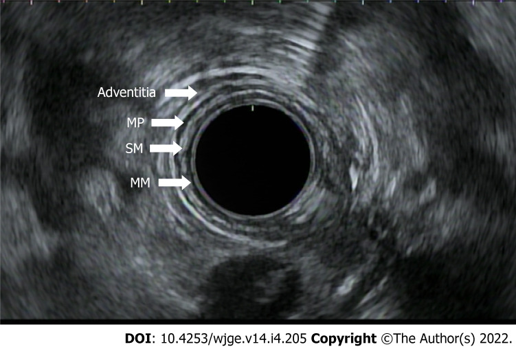

Câncer de Esôfago · 1.7
A ultrassonografia endoscópica (USE) é o melhor exame de estadiamento do câncer de esôfago (e do gástrico). O transdutor na ponta do endoscópio diferencia, por ecogenicidade, mucosa / submucosa / muscular — e mostra até que camada o tumor invadiu.

No tórax, muitas doenças causam linfonodomegalia — tuberculose (alta prevalência no Brasil), pneumonia, doenças autoimunes. Por isso é preciso provar a malignidade por punção (PAAF guiada por USE).
Contraste: no câncer gástrico, linfonodo abdominal aumentado já é considerado maligno no estadiamento.
TC de tórax e abdome para TODOS: tórax para linfonodos e invasão de órgão nobre; abdome para metástase à distância.
A USE e a TC mostram que o tumor está colado/próximo, mas não definem a invasão da luz brônquica — e isso muda tudo: só colado dá para "descascar" e ressecar; invadiu a luz, não há reconstrução possível. A broncoscopia investiga a expressão mucosa da invasão; se positiva, a lesão é irressecável. Não é obrigatória para todos — pede-se na suspeita de invasão de via aérea.
Em candidatos a tratamento curativo, o estadiamento moderno completo acrescenta PET-CT para excluir metástase à distância: EDA+biópsia → TC tórax/abdome → USE (T e N) → PET-CT.
Qual é o melhor exame para determinar a profundidade de invasão (T) do câncer de esôfago?
A USE diferencia as camadas da parede por ecogenicidade e define o T; a TC dá a informação macro e a broncoscopia avalia invasão de via aérea.
Por que um linfonodo mediastinal aumentado precisa ser puncionado no câncer de esôfago?
No mediastino, a linfonodomegalia tem muitas causas benignas; logo, exige confirmação histológica por PAAF (diferente do gástrico, onde já se presume malignidade).